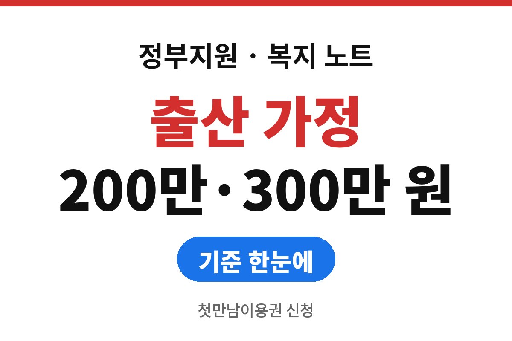
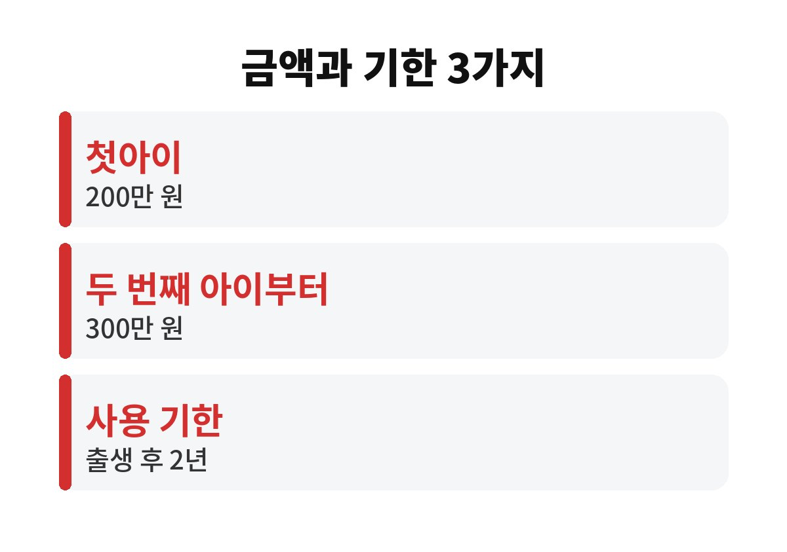
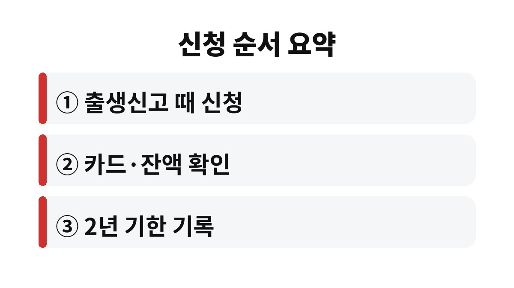

첫만남이용권 신청은 아이가 태어난 뒤 출생신고 때 함께 챙기는 것이 안내의 기본이고, 2026년 기준 금액은 첫아이 200만 원, 두 번째 아이부터 300만 원이다.
받은 금액은 출생일부터 2년 안에 써야 하는 바우처라서, 신청보다 사용 기한에서 더 많이 헷갈린다.
2026년 11월 기준으로 공개된 안내를 읽고 자주 틀리게 알려진 부분을 세 가지로 나눠 바로잡았다.
첫만남이용권은 계좌로 입금되는 현금이 아니라 카드에 담기는 바우처다.
산후조리원 결제처럼 정해진 사용처에서 쓰는 방식이고, 잔액은 따로 조회한다.
사용처 범위는 바뀔 수 있어서 결제 전에 공식 안내를 보고 확인해야 한다.
출생일부터 2년이 지나면 남은 금액이 사라진다는 안내가 많다.
신청 기한은 이와 별개이므로 정확한 날짜는 복지로나 주민센터 공고에서 확인해야 한다.
나는 이 둘을 한 문장으로 묶어 설명한 글이 가장 위험하다고 본다.
첫아이는 200만 원, 두 번째 아이부터은 300만 원으로 금액이 갈린다.
형제가 있는 집은 출생 순서에 따라 받는 금액이 다르다는 점을 먼저 알아 둔다.
순서를 세는 방식이 헷갈리면 주민센터에서 가족관계를 기준으로 확인받는 것이 가장 정확하다.
인터넷 후기마다 설명이 조금씩 달라서 나는 후기보다 공식 안내를 기준으로 삼는다.
출생신고를 하면 자동으로 들어온다고 생각하기 쉽지만, 안내는 신청 절차를 거치라고 말한다.
출생신고 때 주민센터에서 함께 신청하는 방법이 가장 빠르다.
| 구분 | 기준 | 비고 |
|---|---|---|
| 첫아이 | 200만 원 | 2026년 기준 |
| 두 번째 아이부터 | 아이 1명당 300만 원 | 쌍둥이 등은 공고 확인 |
| 사용 기한 | 출생일부터 2년 | 남은 금액은 소멸 |
| 지급 형태 | 바우처(카드 포인트) | 현금 인출 불가 |
표의 숫자는 2026년 기준으로 공개된 안내를 옮긴 것이다.
제도는 해마다 조금씩 바뀌므로 아이가 태어나는 시점의 공고를 한 번 더 읽는다.
이미 이웃이나 지인에게 들은 금액이 있다면 출생 연도가 달랐을 가능성도 생각해 본다.
첫만남이용권 신청 전에 가족관계와 출생 순서가 맞게 등록되어 있는지 확인해 두면 접수가 매끄럽다.
아이 이름이 아직 정해지지 않았다면 출생신고 일정이 늦어질 수 있어서 신청 일정도 함께 밀린다.
신청이 늦어진 만큼 사용 기한이 줄어드는지는 공식 공고에서 확인해야 한다.
출산 전에 방문할 주민센터의 운영 시간과 필요한 신분증을 미리 알아 두는 정도면 충분하다.

쌍둥이렇게 한 번에 여러 아이가 태어난 가정은 아이 수에 따라 금액이 달라질 수 있다고 안내된다.
다만 어느 아이를 첫아이로 보는지 같은 세부 기준은 공식 공고에서 확인해야 한다.
산후조리원 결제를 계획했다면 예약 단계에서 해당 카드 결제가 되는지 조리원에 먼저 묻는다.
사용처로 안내되는 곳이라도 매장마다 결제 방식이 다를 수 있어서 현장 확인이 안전하다.
출산 직후에는 정신이 없어 신청을 미루기 쉽다.
그 사이에도 2년의 시계는 출생일부터 흘러간다.
큰 금액을 한꺼번에 쓰려는 계획보다 기한과 잔액을 먼저 적어 두는 쪽이 낫다.

아이가 태어났다면 이번 주에 주민센터 방문 일정을 먼저 잡으면 된다.
다음에 확인할 것은 출생일 기준 2년이 되는 날짜와 사용처 목록이다.
대상 여부가 애매하면 관할 주민센터 복지 담당에게 묻는 쪽이 정확하다.
※ 2026년 11월 기준 공개된 정보를 정리한 글이며, 정확한 대상 요건·금액·신청 기간은 복지로·정부24·관할 주민센터의 공식 공고를 확인하길 바란다.